| 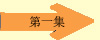 | 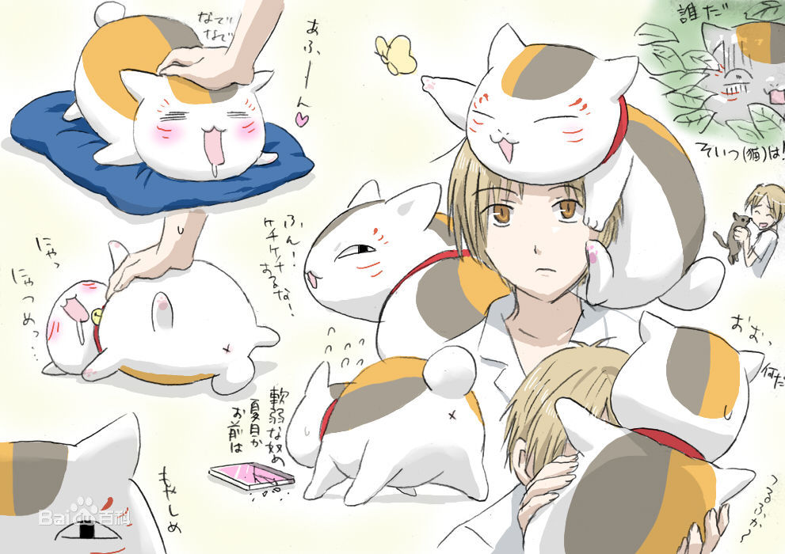 | 01 猫和友人帐 猫と友人帐
能看见妖怪的少年夏目贵志，有一位名叫玲子的传奇般的外婆。由于她年轻的时候即能看见妖怪还拥有强大的能力，在被周围的人排挤的时候，为了打发寂寞的时间而向妖怪们挑战。并让输掉的妖怪签下自己的名字，做成了一本能够统治众妖怪的“联络簿”（友人帐）。而可怜的外孙夏目贵志在外婆去世后，因为和外婆一样拥有强大的妖力并能看到妖怪，但由于有一个过去和玲子有误会的妖怪想要夺取友人帐，就在被妖怪追赶的途中，贵志跑到了附近的祠堂，结果却不小心解开了被封印在招财猫外观里名叫斑（猫咪老师）的妖怪的封印，之后为了完成玲子外婆没有完成的事，斑决定和夏目贵志一起把友人帐上的名字还给妖怪们。 |
| 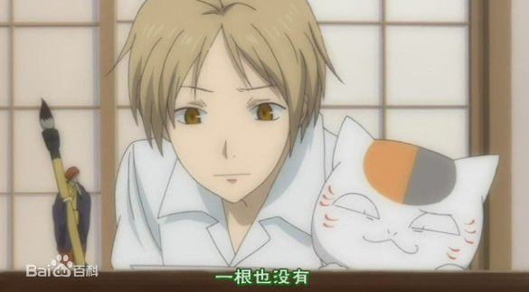 | 02 露神的祠堂 露神の祠
不时有妖怪来找贵志来索要名字，这天来了一个茶杯大小的妖怪（神？）露神。结果写着露神名字的一页和另一个妖怪的名字粘在一起了，若强行撕开，则会伤害到妖怪，于是贵志他们找了好几天，终于找到了另一个妖怪，把名字归回给了他们。起先，露神因为人们信仰的消失，而逐渐变小，结果当最后一个信仰者花子奶奶去世的时候，露神也要消失了，贵志看这逐渐消失的露神很着急，说，以后我信仰你。但是露神拒绝了，他说我们是朋友，并且他也希望能够和花子一起走…… |
| 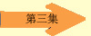 | 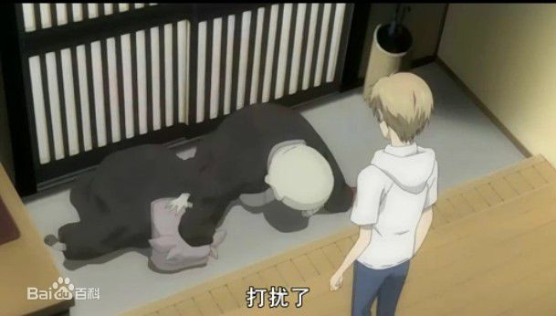 | 03 八原的怪人 八ツ原の怪人
星期日，两个妖怪来拜托贵志希望能替它们驱逐一个在八原的除妖师，贵志起先拒绝，但两个妖怪不依不挠，贵志无奈答应。此时，贵志隐约感觉到同校的田沼似乎也能看到妖怪，想到自己年幼时不被理解的孤独，于是便去了田沼所寄居的寺院，结果恰巧碰到了妖怪们说的除妖师，奇怪的是，除妖师并不能看到妖怪，只是因为自己的儿子被妖怪干扰于是四处净化，原来除妖师就是田沼的父亲。虽然田沼只能看到妖怪影子和闻到气息，但贵志依然觉得自己找到了同伴，并且对妖怪也有了新的理解…… |
| 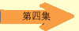 | 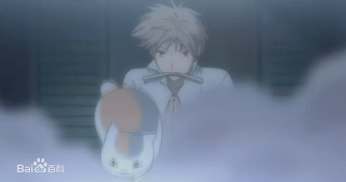 | 04 时雨和少女 时雨と少女
试胆大会，同班的笹田纯（班长，也是本次试胆大会的发起人）跟贵志说了旧校舍的传说，因为对人类的怨恨使招福的神成了低劣的妖怪，并且在旧校舍久久不去。而就在试胆大会期间，同班的同学居然一个个消失了。原来那个妖怪是真的存在的。笹田纯怀疑贵志能看到妖怪，并且请求贵志帮助她找到那个曾经帮助她的妖怪，希望能够打开那个妖怪的心结，不要认为自己是不洁的。最后贵志将名字还给了妖怪，也解放了他，妖怪时雨也向说笹田纯了谢谢…… |
| 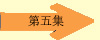 | 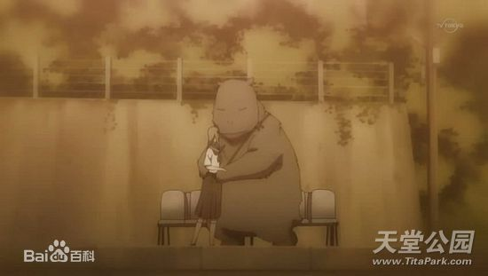 | 05 心色的票 心色の切符
在翻祖母遗物的时候，贵志翻到了一张车票，因为好奇志贵前往已经荒废的车站，却发现了一直在等铃子的河马型妖怪山斗，原来山斗和好朋友三棱吵架了，因为山斗把重要的名字给了铃子。铃子本来答应要陪山斗一起去雾沼找三棱，结果因为粗心大意而忘记了。为了完成铃子与妖怪的约定，贵志将名字还给了山斗并陪它前往了雾沼，两个好朋友也和好如初…… |
| 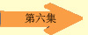 | 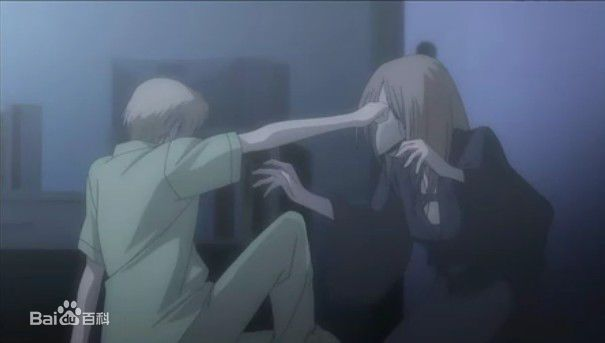 | 06 水底之燕 水底の燕
居住在水底双叶村的妖怪雨燕，为了向曾经帮助过自己的人道谢，就附在了贵志身上，后来雨燕虽然与救命恩人见了面，也说了道谢的话，但因为那人看不见她，所以没有回应。贵志总觉得这样的话，雨燕的心愿便没有达成，于是参加的妖怪们举办的双叶祭，在斑的帮助下，赢得了可以让妖怪变成人类的浴衣（只有一晚），雨燕也终于让救命恩人看到了自己…… |
| 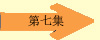 | 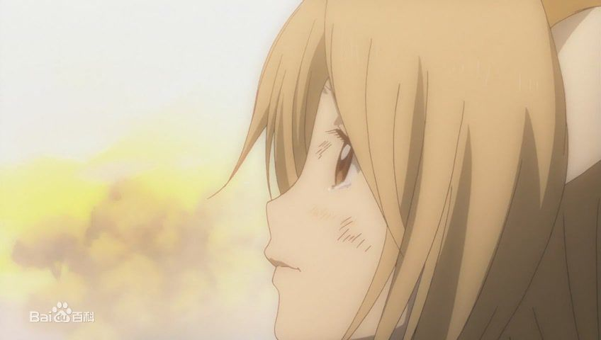 | 07 小狐狸的帽子 子狐とぼうし
温泉合宿，贵志救了一只被妖怪欺负的小狐狸，小狐狸的妈妈去世了，自己一个人在森林里很孤独，在得知了友人帐的事情以后，小狐狸写下了自己的名字交给贵志，但被贵志拒绝了。贵志走后，为了再见到贵志，小狐狸吃了能变成人一天的药，独自前往贵志所在的城市，看到了与家人一起热闹吃饭的贵志，便悄悄离开了---原来寂寞的只有自己。谁知贵志察觉到了小狐狸，并跟了出来，与小狐狸约定下次去看它…… |
| 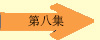 | 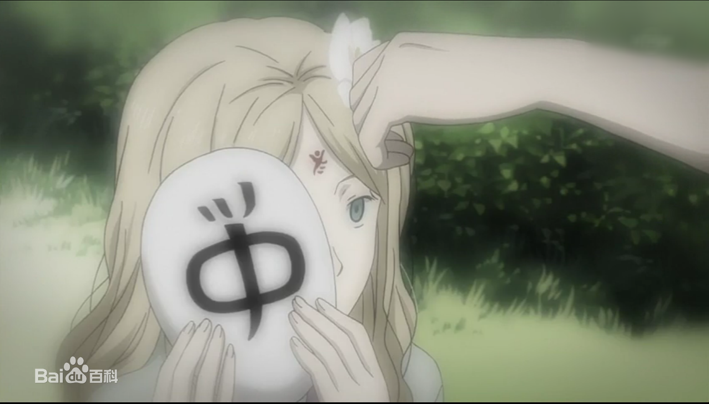 | 08 虚幻之光 儚い光
贵志在河边遇到了章史先生，并得知章史在年轻的时候也看得见妖怪，并与一个萤火虫化身的妖怪成为了好朋友。结果有一天，章史突然看不见妖怪了，他来到河边呼唤萤的名字，萤站在他面前，他依然看不见，即使这样，萤还是依然陪着他。再过几天，章史就要结婚了，为了让章史看见自己，萤重新变成了萤火虫的形态，虽然这么做的话，它就要在一天后死亡，但它还是义无反顾。章史与未婚妻在散步的时候，萤飞到了他们面前，并且带了成千只萤火虫，璀璨如繁星…… |
| 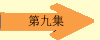 | 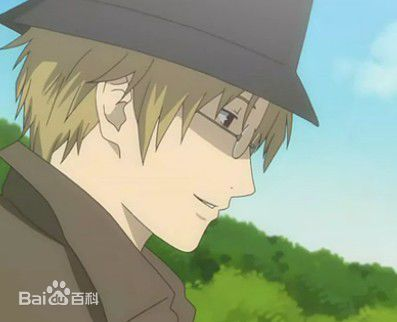 | 09 可疑的除妖人 あやかし祓い
夏目牵着招财猫外出的时候遇见了一名叫名取周一的名演员，还遇上了脖子上系着绳子的妖怪。晚上夏目被纸状的妖怪袭击，招财猫外出喝酒了不在，夏目挣脱妖怪的束缚之后，发现周一还有个除妖人的身份，他和夏目一样看得见妖怪，但是他和夏目对妖怪的看法完全相反，对妖怪充满了憎恶。他要求夏目做他的助手去驱除一家仓库的妖怪。夏目发现在那仓库的妖怪就是曾遇上的脖子上系着绳子的，交谈中他了解到这妖怪的不幸经历，还发现它与周一间有着一段联系…… |
| 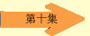 | 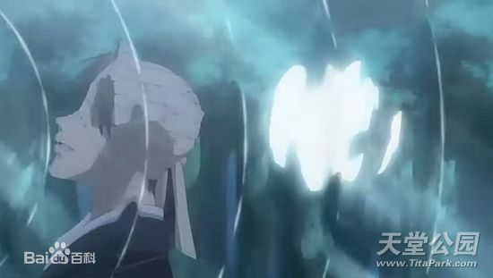 | 10 浅葱的琴 アサギの琴
夏目遇见了一个打着伞的妖怪，它要抢夺夏目的身体。了解之后才知道原来有个在矶月之森弹奏的美丽妖怪浅葱患上了一种让身体像泥土一般剥落的疾病而无法弹琴，那个妖怪为了让浅葱弹琴把浅葱放入了夏目体内。为了让浅葱和自己分离，夏目决定帮忙实现浅葱的愿望…… |
| 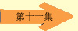 | 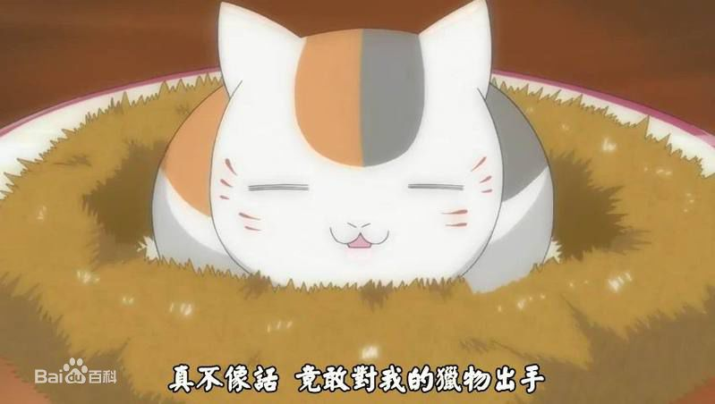 | 11 猫咪徒然帐 ニャンコ徒然帐
招财猫偷吃了藤原家的虾，被夏目质问时又不幸踩坏了夏目借的CD，在夏目的责问下与夏目断绝关系离家出走。它不仅教训了夏目附近森林的对它有微言的低级妖怪，还变身为女高中生模样榨干了西村和北本的钱包。它打败了名叫猿猴的想抢夺《友人帐》的妖怪，伤痕累累的它回藤原家时发现，夏目高兴地正照顾着一只白色的小猫…… |
| 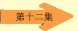 | 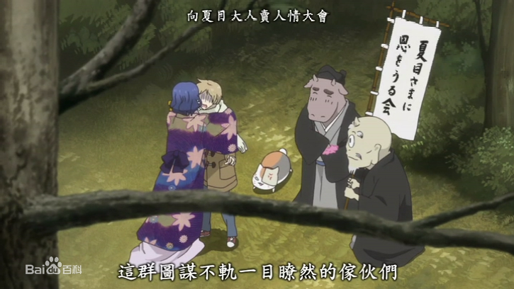 | 12 五日印 五日印
夏目告别朋友后在归家途中为解救一只青蛙而遇上了被封印的妖怪，那妖怪正吞食其他妖怪时发现了夏目，扬言要吃掉它，夏目挣脱了它的触手，逃离了那片森林…… 夏目发现被妖怪碰过的地方出现了奇怪的血印，招财猫大意触碰之下才发现那是诅咒的印记，可惜受到诅咒的影响身体变小力量大打折扣，无法担任夏目的保镖。在招财猫的建议下，夏目利用友人帐召唤来了妖怪三筱，三筱表示对诅咒不熟帮夏目找来了妖怪丙，没想到丙她喜欢粘着夏目玲子，却有着讨厌男人的习惯……但夏目的真诚还是感染了丙，并着手调查了这只被封印的妖怪。随着影子怪妖力吸食的渐渐增进，开始只能接近家门的它准备把夏目吃掉。经过三人的努力，妖怪被灭。离家的夏目得以回家。 |
| 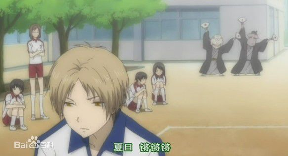 | 13 秋之夜宴 秋の夜宴
与夏目分散的招财猫遇上子田沼，泄漏了自己是妖怪的秘密。与夏目汇合后，三人去了正在筹备当中的庙会，遇上了世田，田沼协助夏目逃离，却落下了招财猫；小狐狸趁着庙会的时机来看望夏目却被其他妖怪欺负，名取周一为小狐狸解了围但隐瞒了他认识夏目的事实；田沼带夏目去了他家神社，夏目没有告诉田沼他能看见院子的池塘；笹田拴住了招财猫作为与夏目相见的筹码…… |